Normal Training Curves by C-rate
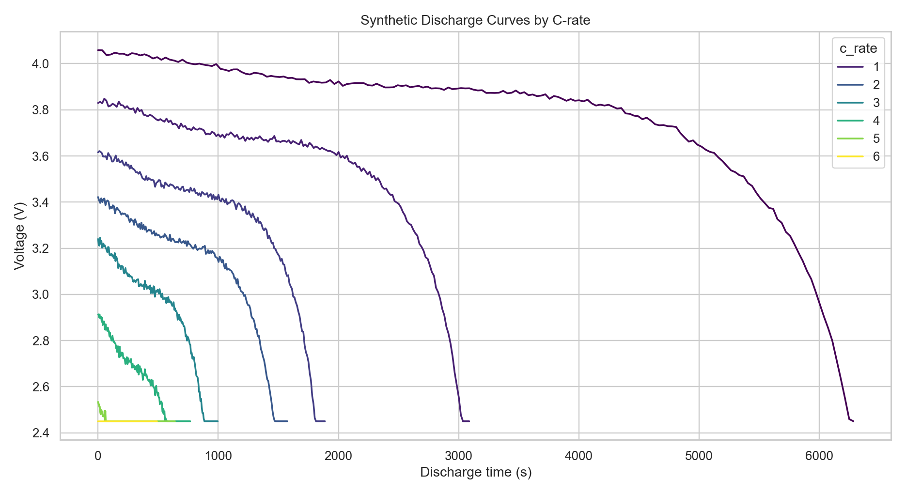
训练集只包含正常电池曲线；验证集混入实际容量衰减曲线。模型学习正常放电电压，衰减电池通过“正常模型预测电压高于实际电压”的尾部正残差被识别。
Core Logic: DNN and 1D-CNN are trained only on normal discharge curves. Validation degradation is not a fitting target; it is detected as a residual pattern against the normal model.
| model | subset | mae_v | rmse_v | r2 | max_abs_error_v |
|---|---|---|---|---|---|
| DNN | normal_validation | 0.04617 | 0.06413 | 0.98487 | 0.26617 |
| 1D-CNN | normal_validation | 0.04958 | 0.06818 | 0.98289 | 0.39568 |
| model | degradation_score | curve_roc_auc | normal_mean_score | degraded_mean_score |
|---|---|---|---|---|
| 1D-CNN | tail_positive_residual_v | 0.95833 | 0.01905 | 0.38909 |
| DNN | tail_positive_residual_v | 0.79688 | 0.02126 | 0.39771 |

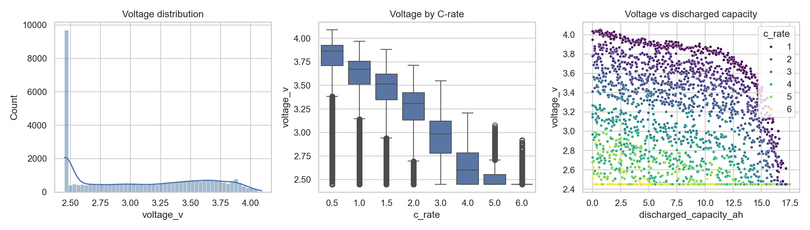
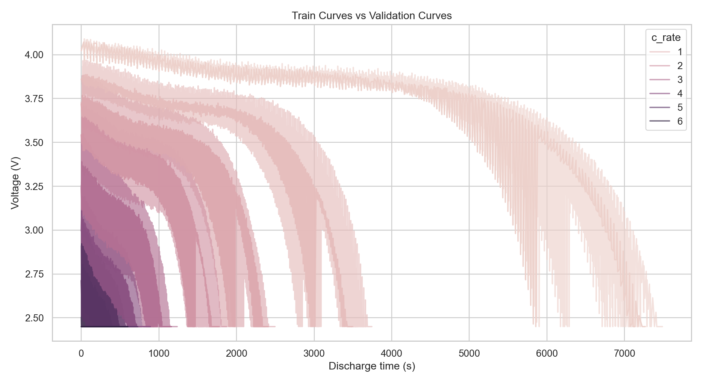
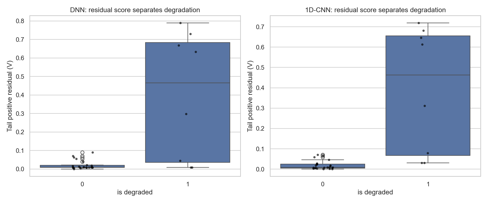
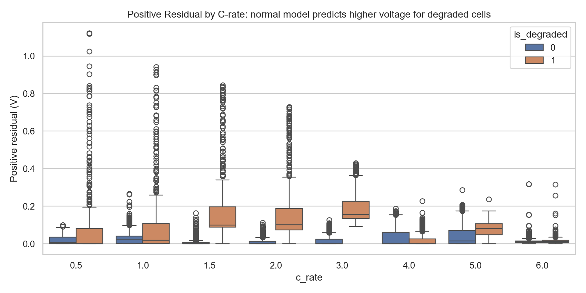
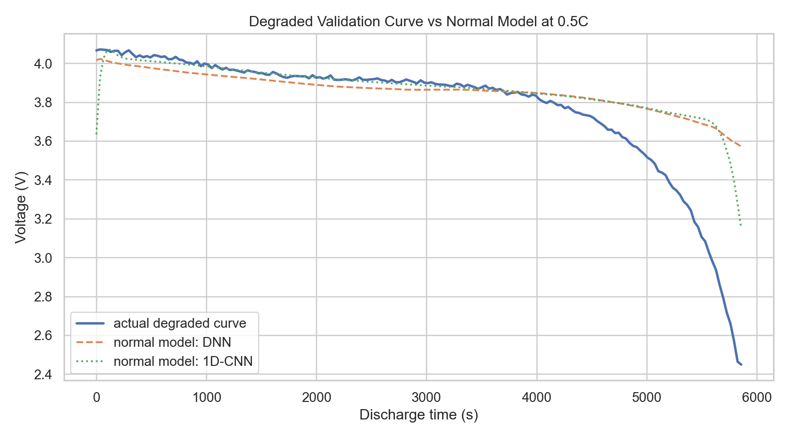
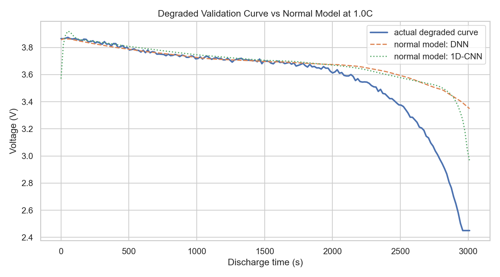
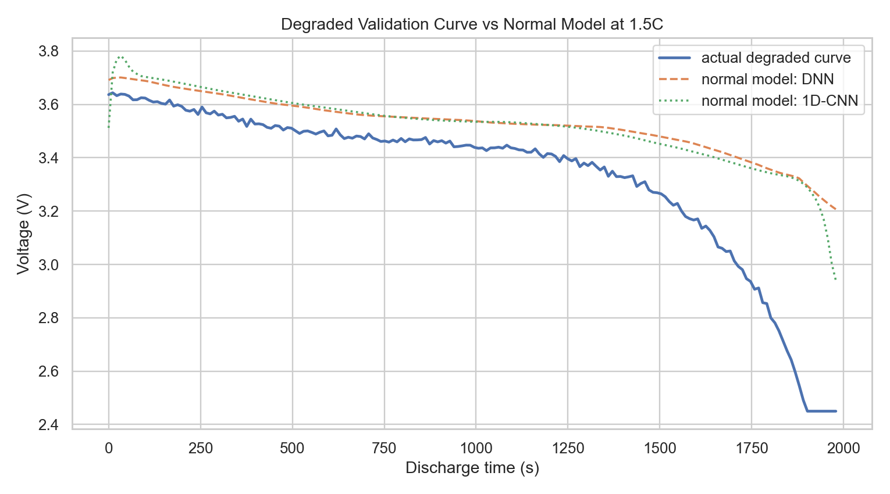
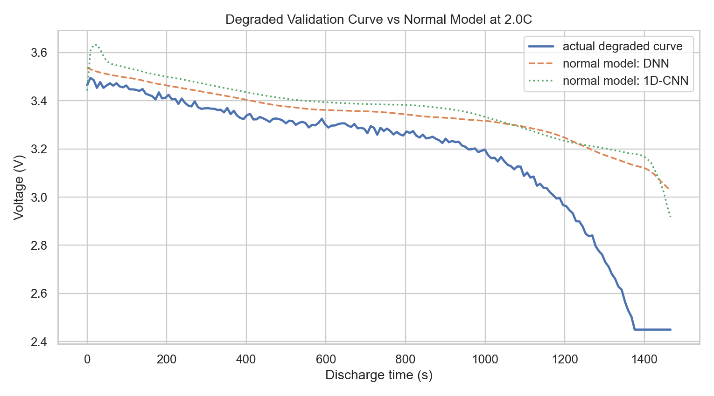
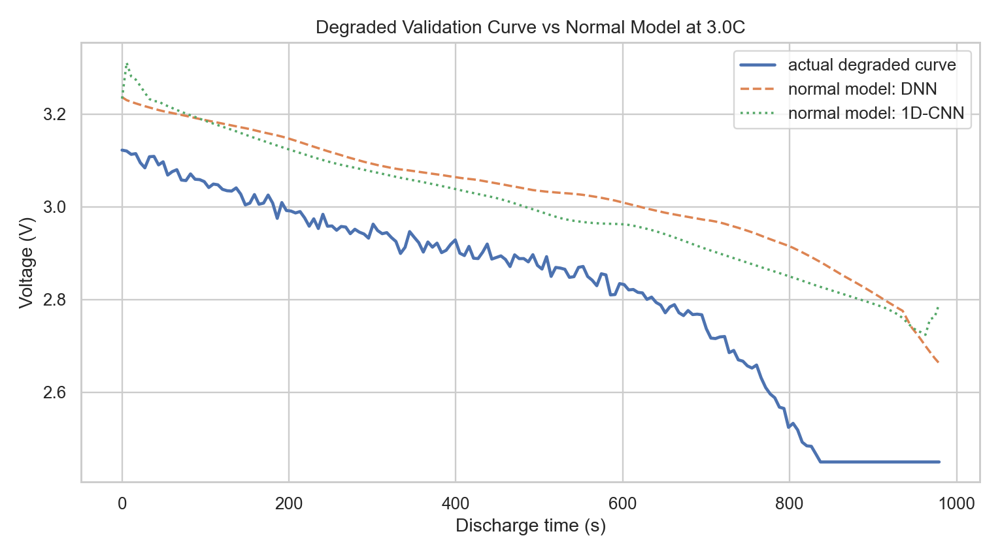
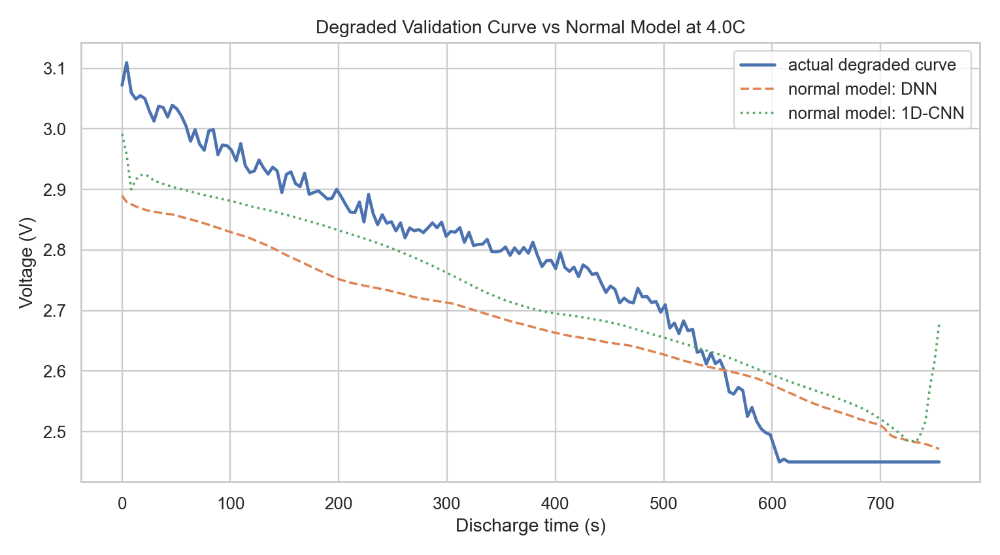
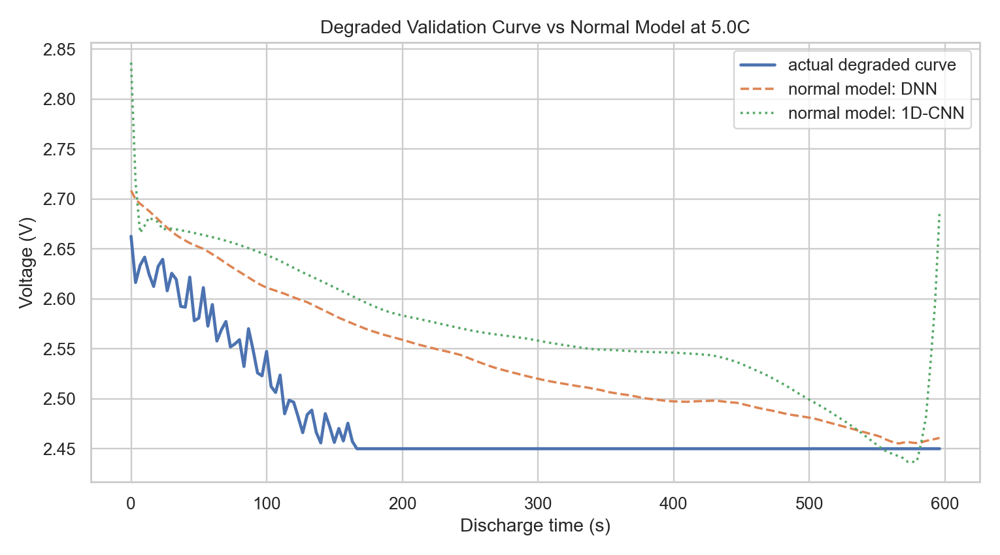
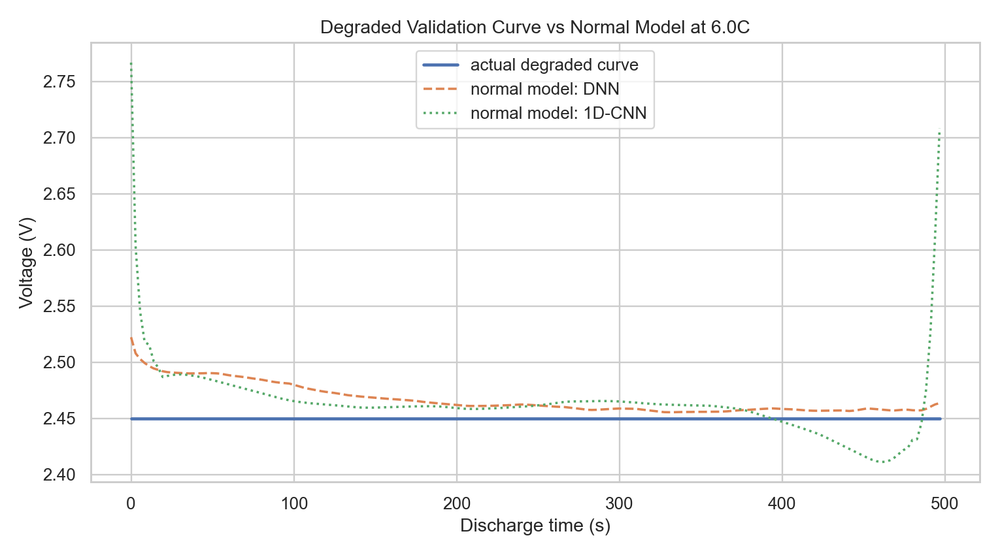